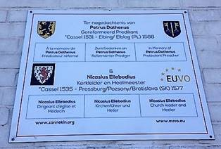

> nieuwsbrief
> JG 36e jg. - 3e trimester 2018
Hernieuwen
ledenbijdrage voor 2018
De
penningmeester dankt voor de vlotte wijze waarop gehoor
gegeven werd aan zijn verzoek tot vereffening van de bijdrage
voor 2018. De nalatigen tot nog toe wezen hierbij daaraan
herinnerd. Even ter herinnering: de bijdrage voor het al in
mei 2018 verschenen nieuwe Jaarboek De Nederlanden
extra muros en voor de driemaandelijkse Nieuwsbrief Zannekin
beloopt 29 . Vanaf 35 wordt u met dank als steunend lid
geboekt. Men kan daartoe enkel nog gebruik maken van
ons Belgische zogenaamd Europees rekeningnummer iban BE13 4648 2202 5139 bic: KREDBEBB waarvan de
rekeningoverzichten ons dagelijks meegedeeld worden.
Hernieuwd
verzoek
Onze Zannekin-Nieuwsbrief
verschijnt slechts driemaandelijks. Mochten onze leden en
belangtellenden ons massaal hun e-postadres willen meedelen,
dan wordt het ons mogelijk hen ook tussentijds te bereiken
teneinde hen vlotter te informeren omtrent de op stapel
staande activiteiten en andere initiatieven die in het
verlengde daarvan liggen. Wil ons daarom uw e-adres meedelen
via een kort berichtje aan maurits.cailliau@skynet.be
met als boodschap: interesse in Zannekin. Een honderdtal
leden deden dit al, waarvoor dank. Deze hernieuwde oproep is
dan ook gericht tot hen die dit tot nog toe nalieten te
doen.
GDPR: Mogen wij u blijvend op
de hoogte houden?
Op 25 mei trad de Europese
Algemene Verordening Gegevensbescher-ming (GDPR) in werking.
We maken gebruik van uw e-mailadres om u in te lichten over
onze activiteiten. Uw gegevens hebben we verzameld n.a.v.
een eerder contact. Met dit bericht willen we u erop wijzen
dat u op elk ogenblik het recht hebt om uw e-mailadres uit
onze mailinglijst te verwijderen via de link onderaan deze
e-mail. Uw gegevens worden niet met derden gedeeld en zijn
opgeslagen in een beveiligde omgeving. De volledige
ZANNEKIN-privacy-verklaring vindt u op www.zannekin.org
Onthulling Dathenus-gedenkplaat te Cassel op zaterdag 25 augutus 2018
 Foto
gedenkplaat: E. Stubbe
Petrus Dathenus en Nicasius Ellebodius zijn twee bekende Casselnaren, die het levenslicht zagen in Kassel/Cassel tijdens de woelige 16 eeuw
De minister met den rosten baerd
Pieter Datheen/Daethen raakte als gereformeerd predikant
bekend als auteur van de psalmberijmingen, die in bepaalde
protestantse kerken.in Nederland en Zuidelijk-Afrika nog
hoorbaar zijn. Vanuit de Zuidelijke Nederlanden zwierf hij
rond doorheen de Duitse gebieden tot hij rust vond in het
voormalig Pruisische Elbing/Elbląg, nu een Poolse stad.
Nicasius Elleboudt was priester en
heelmeester. Vanuit de Zuidelijke Nederlanden vertrok hij naar
Midden-Europa, waar hij opklom tot in de hoogste hiërarchie
van de Hongaarse katholieke kerk. Hij overleed te
Pressburg/Pozsony, nu het Slovaakse Bratislava.
De gedenkplaat aan de zijgevel van de
herberg De Drie Meulens in de Casselse rue Notre-Dame wordt
plechtig ingewijd op zaterdag
25 augustus 2018. Sprekers uit Nederland, Vlaanderen van
beide zijden van de Schreve en Zuid-Afrika zullen er het woord
voeren. Eerwaarde Heer Cyriel
Moeyaert zal de gedenkplaat inwijden. De plechtigheid
begint om 15.00 uur. U
bent van harte uitgenodigd daarbij aanwezig te zijn.
Voor alle bijkomende informatie kunt u
terecht bij Leo Camerlynck op het nummer 00 32 485 630 227 of
via e-post leo.camerlynck@skynet.be en
Karel Appelmans via e-post Karel.Appelmans@gmail.com
De gedenkplaat is een initiatief van de
vzw EUVO en de Stichting Zannekin.
Gedenkplaat Petrus Dathenus in het Frans-Vlaamse Cassel
In het
Noord-Franse stadje Cassel is een gedenkplaat aangebracht
ter nagedachtenis aan Petrus Datheen (1531-1588). De
rondzwervende gereformeerde theoloog, die grote bekendheid
verwierf door zijn psalmberijming, werd hier
hoogstwaarschijnlijk geboren. Cassel behoorde toen nog tot
de Zuidelijke Nederlanden.
De
gedenkplaat, in vier talen, is aangebracht op de buitenmuur
van café-restaurant In de drie Meulens aan de Rue Notre Dame
in Cassel, vlakbij de Grote Markt. In deze straat, in de
schaduw van de Onze-Lieve-Vrouwekerk, zou Petrus Dathenus
geboren zijn. Al blijft dat gissen, zegt Leo N. J.
Camerlynck desgevraagd. Veel bewijzen zijn er niet.
Camerlynck,
woonachtig in het Belgische Ukkel, is voorzitter van de
Stichting Zannekin. Deze in 1934
opgerichte stichting zet zich in om de historische en de
culturele banden van gebieden die ooit tot de Nederlanden
hebben behoord, weer aan te halen en waar nodig te
hernieuwen. Het huidige Frans-Vlaanderen, tegen de Belgische
grens aan, is zon gebied. De gedenkplaat voor Datheen kwam
er, aldus Camerlynck, in goede samenwerking met de vereniging
Euvo, Europa der
volkeren, opgericht met als doel het Vlaamse karakter van de
Franse Westhoek te bewaren. Aan het roer daarvan staat Karel
Appelmans, uit Bray-Dunes, bij Duinkerken.
Vijf
jaar geleden
Het idee voor
een gedenkplaat voor Datheen was afkomstig van de Groningse
staatsrechtgeleerde prof. mr. dr. Andries Postma, voormalig
Eerste Kamerlid voor het CDA. De website parlement.com omschrijft hem
onder meer als voorstander van hechte (culturele)
samenwerking met Vlaanderen. Camerlynck: Postma kwam vijf
jaar geleden al met het idee. We hebben vervolgens geprobeerd
met het stadsbestuur van Cassel in contact te komen, maar
zonder enig resultaat. We hadden gehoopt de gedenkplaat op de
muur van het stadhuis te kunnen vastspijkeren, maar zelfs op
een aangetekend schrijven onzerzijds kregen we geen enkele
reactie. Uiteindelijk hebben we toen het heft maar in eigen
handen genomen. De eigenaar van In de drie Meulens bleek
meteen bereidwillig om het bord op de muur van zijn pand te
laten aanbrengen. Daarmee sneed het mes dus aan twee kanten:
de gedenkplaat kreeg een zeer zichtbare plek én zijn
café-restaurant zou meer aandacht trekken.
De plaat bevat
overigens twee namen: behalve die van gereformeerd predikant
Petrus Dathenus ook die van zijn tijdgenoot Nicasius
Ellebodius. Deze kerkleider en heelmeester werd in 1535 in
Cassel geboren. Officieel ingewijd is de plaquette nog niet,
aldus Camerlynck. Dat gebeurt eind augustus. We willen dan,
naast Andries Postma, bijvoorbeeld ook iemand uit Zuid-Afrika
uitnodigen. In sommige kerkelijke gemeenten wordt daar nog
steeds uit de Psalmberijming van Datheen gezongen.
Datheens
ouders brachten hem al op jonge leeftijd naar een klooster in
Ieper. Daar brak hij op 18- of 19-jarige leeftijd met de
Rooms-Katholieke Kerk. In de loop van zijn leven stichtte
Datheen op tal van plaatsen waaronder Frankenthal
calvinistische gemeenten. Op 17 maart 1588 overleed hij in het
Poolse Elbląg.
Toeristisch
Vermeldenswaard
is hier nog wel een artikel dat de Vlaamse
literatuurhistoricus drs. Karel Porteman begin jaren zeventig
van de vorige eeuw schreef in het tijdschrift Ons Erfdeel. De
latere hoogleraar klassieke Nederlandse letterkunde aan de
Katholieke Universiteit in Leuven zag weinig redenen voor een
Casselse gedenksteen voor Pieter Datheen. De ongeschreven
wetten waardoor, op de gepaste plaats en tijd, gevels, muren,
poorten en zitbanken, bij een min of meer aanzienlijke
volkstoeloop van eeuwigdurende gedenkplaten worden voorzien,
getuigen volgens de formule van de diepe erkentelijkheid
der gemeenschap ten aanzien van haar groten, begon Porteman
zijn bijdrage. Vaak echter is de belangstelling voor de
geografische afkomst van een beroemdheid overwegend van
nationalistische of toeristische aard. Zelfs al wilden de
huidige inwoners van het Frans-Vlaamse stadje Cassel Pieter
Datheen met een dergelijk gebaar als hun beroemdste zoon eren,
dan zouden zij bezwaarlijk hun ijver kunnen verantwoorden: de
banden die Datheen met Cassel en Frans-Vlaanderen binden zijn,
op het toeval na dat wij geboorteplaats noemen, om zo te
zeggen nihil. Het staat zelfs vast dat een groot deel van de
familie Daets of Daeten zich bij de hervormde gemeente die
Pieter te Frankentahl in de Paltz leidde, is gaan voegen,
zodat Cassel zelfs niet voor de thuis of de vaderstad van
de beroemde Calvinistische psalmberijmer kan doorgaan.
Toch is er,
aldus Porteman, de roerende anekdote. In zijn droevige
levensavond, die hem naar de koele Noordduitse gewesten had
gevoerd, laat Datheen zich te midden van de Lutheranen
veiligheidshalve Petrus Montanus noemen, denkend aan het
Vlaamse stadje op de berg waar hij was geboren. Cassel ligt
op de top van de Mont Cassel (Nederlands: Kasselberg).
Lees ook:
Berijming Dathee